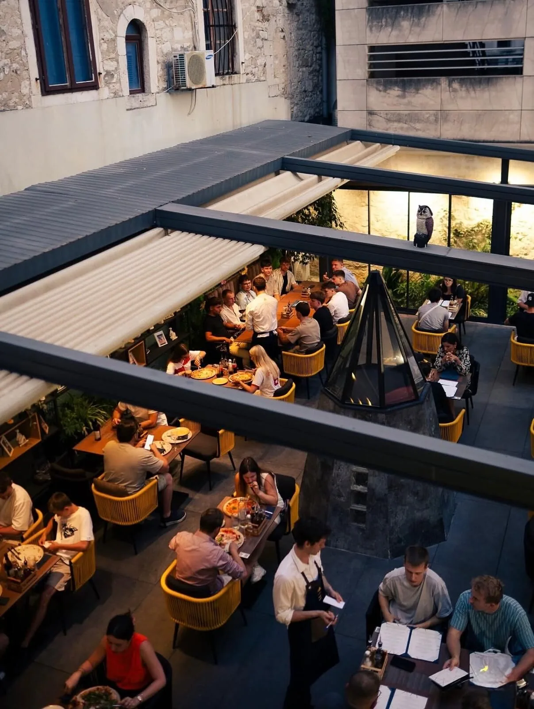
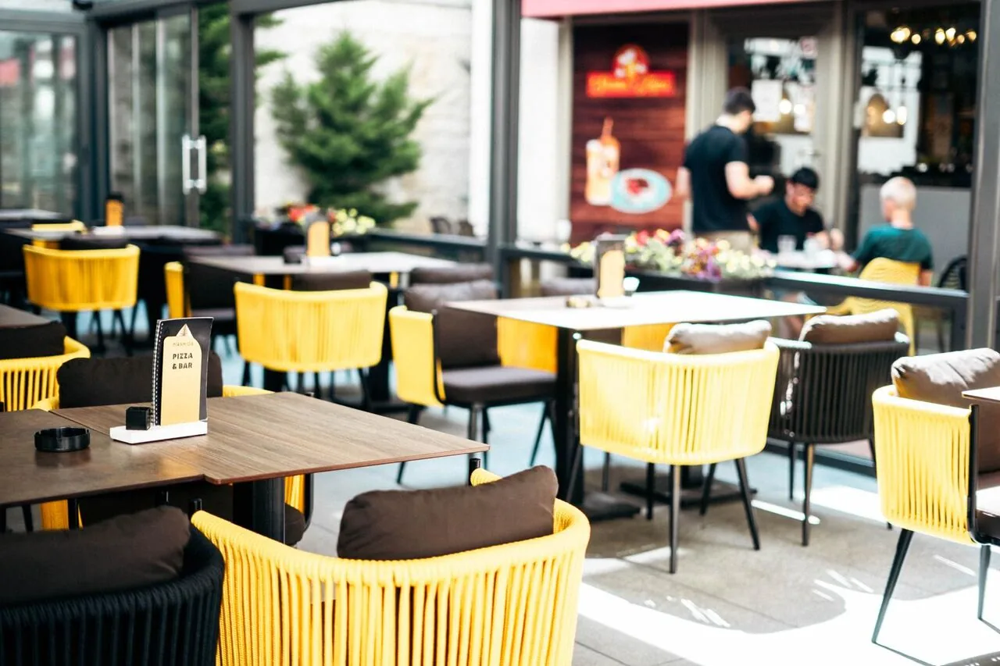
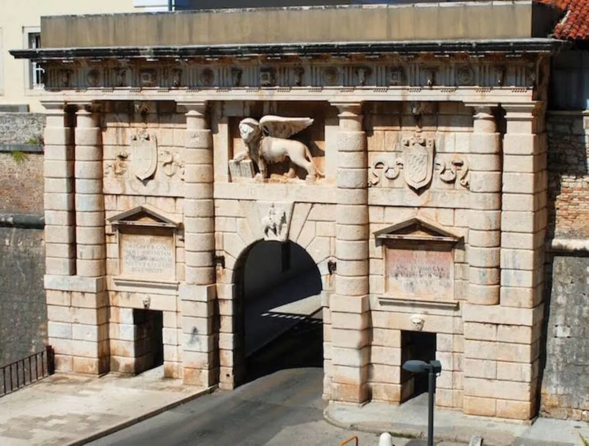
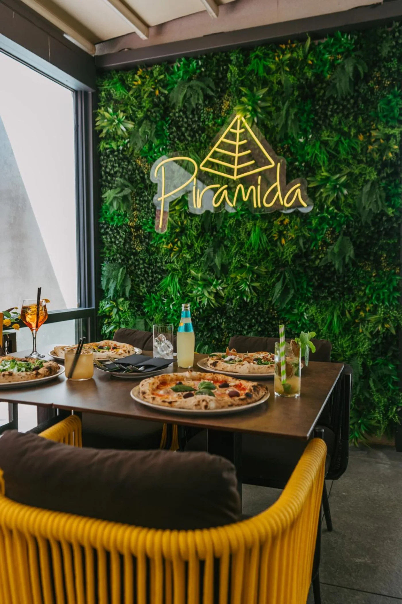
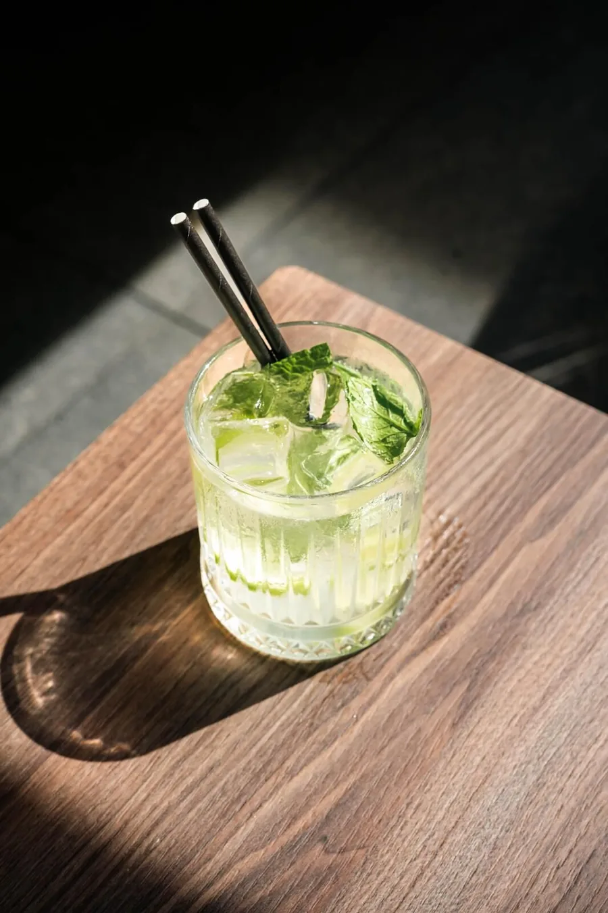
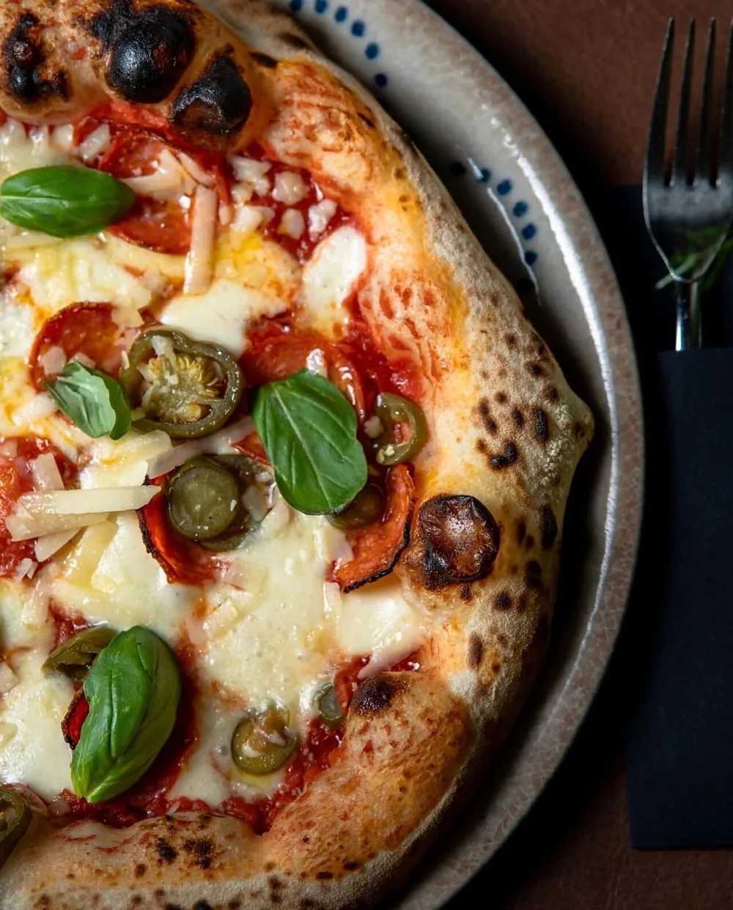
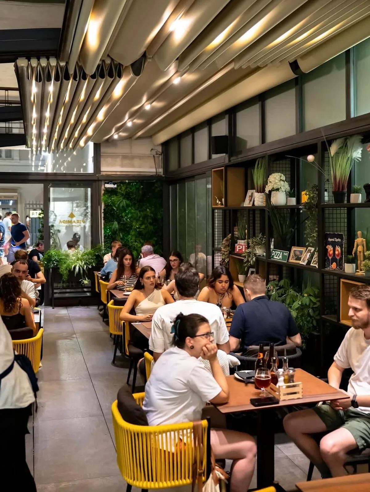
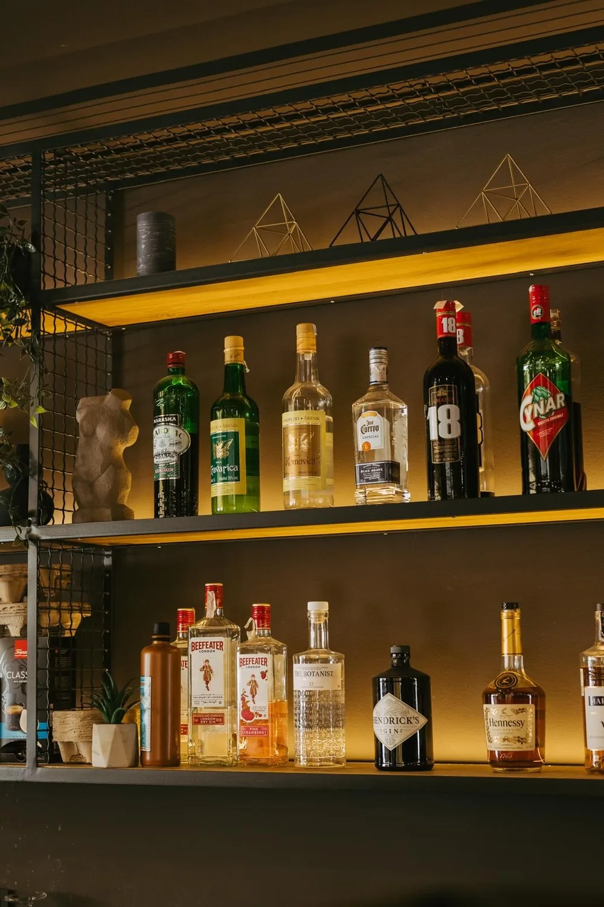
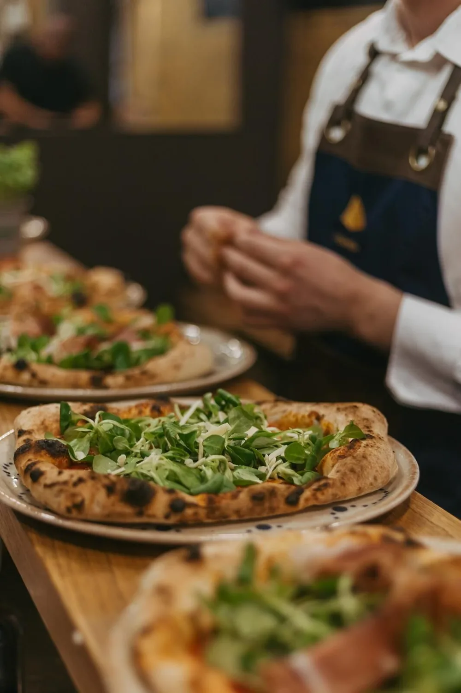

Špire Brusine 16, nekoliko koraka od Kopnenih vrata. Napolitanska pizza, kokteli i hrvatska vina — u dvorištu pod pergolom. Svaki dan od 12 do 23.
Napolitanska pizza, koktel u ruci i dvorište oko staklene piramide.

Piramida je pizzeria i bar na Špire Brusine 16, odmah iza Kopnenih vrata. Pizza napoletana peče se po narudžbi, od svježih sastojaka, a uz nju ide karta koktela i hrvatskih vina. Kuhinja je otvorena, pa se pizza vidi dok nastaje. Sjedi se unutra uz zelenu biljnu stijenu s neonskim znakom ili vani u dvorištu pod pergolom, oko staklene piramide. Gosti nas na Googleu ocjenjuju s 4,8 (1.347 recenzija), a Tripadvisor nam je 2025. dodijelio Travelers' Choice.

Piramida je na adresi Ul. Špire Brusine 16, u starom gradu Zadra, nekoliko koraka od Kopnenih vrata — renesansnih gradskih vrata s mletačkim lavom sv. Marka. Uz njih veže se legenda: prođete li kroz glavni ulaz i zamislite želju, ispunit će se — ali samo ako nitko istovremeno ne ulazi kroz druga dva prolaza.
Odatle je sve pješice: Foša je odmah s druge strane vrata, a Narodni trg, Forum i riva u nekoliko minuta hoda. Stari grad je pješačka zona, pa se do lokala dolazi šetnjom; u okolnim ulicama dostupno je ulično parkiranje, a objekt navodi i mogućnost samostalnog parkiranja.






Ul. Špire Brusine 16, 23000 Zadar, Hrvatska
Gotovina, Mastercard, VISA, Diners Club, Maestro
Otvoreni smo svaki dan od 12:00 do 23:00. Radno vrijeme prije dolaska provjerite na Google profilu ili na 097 675 2708.
Na adresi Ul. Špire Brusine 16, 23000 Zadar, u starom gradu, nekoliko koraka od Kopnenih vrata.
Nazovite 097 675 2708 ili rezervirajte online. Ljeti je rezervacija preporučena, osobito za veće društvo.
Objekt navodi mogućnost samostalnog parkiranja, a u okolnim ulicama dostupno je ulično parkiranje. Stari grad Zadra je pješačka zona pa je najbliže parkiralište kratka šetnja od lokala.
Da. Primamo gotovinu, Mastercard, VISA, Diners Club i Maestro.
Da. Na Tripadvisoru je lokal označen kao vegetarian friendly, s veganskim opcijama. Pizza Vegetariana izdvojena je na Google profilu lokala.
Da, ljubimci su dobrodošli.
Da. Sjedi se u dvorištu pod pergolom i na vanjskim stolovima uz lokal.
Objekt je naveden kao pristupačan. Za pitanja o konkretnim potrebama nazovite 097 675 2708.
Da, pizza se može naručiti i za van. Narudžbe na 097 675 2708.
Da. Prostor se koristi za obiteljske svečanosti, rođendane i poslovne domjenke. Dogovor na 097 675 2708.
Da, besplatan WiFi dostupan je gostima.